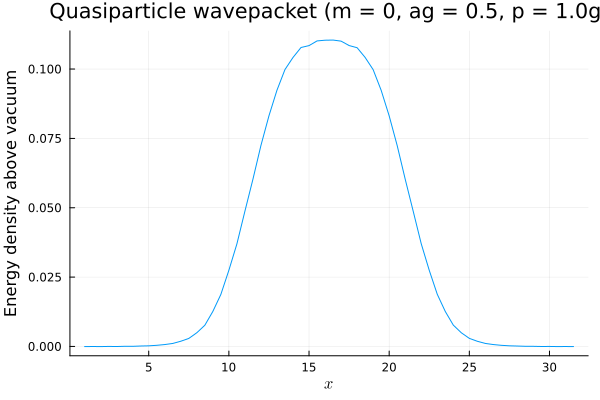

States
Lattice states in Schwinger.jl are represented by the abstract type SchwingerState, with four concrete types:
BasisState: a state specified by the eigenvalues of occupation operators $\chi^\dagger_{n,\alpha}\chi_{n,\alpha}$ and $L_0$EDState: a linear combination ofBasisStatesITensorState: a matrix product state usingITensorMPS.jlMPSKitState: a matrix product state usingMPSKit.jl
Given a state, we can find the expectation values of the occupation operators and electric field operators:
using Schwinger
lat = Lattice(6; F = 1, a = 10) # towards the lattice strong coupling limit ga -> infty
gs = groundstate(Hamiltonian(lat; backend=:ED))
occupations(gs), electricfields(gs)([0.9996009569748595; 0.0007976086592019167; … ; 0.9992023913407977; 0.0003990430251401046;;], [-0.0003990430251404886; 0.00039856563406142807; … ; -0.00039904302514120744; -1.1028504498522551e-15;;])We can also evaluate the entanglement entropies of each bisection of the lattice:
using Schwinger
lat = Lattice(20; F = 1, )
gs = groundstate(Hamiltonian(lat; backend=:ITensors))
entanglements(gs)19-element Vector{Float64}:
0.5892661594332956
0.3944499510238972
0.5168663014805479
0.4537304990970669
0.4899161466432041
0.4701048867712221
0.48129808740193203
0.47489337761176953
0.4788497809441352
0.4759380630855363
0.4788497809440098
0.4748933776117166
0.4812980874018646
0.47010488677115536
0.489916146643139
0.4537304990969863
0.5168663014802901
0.3944499510236887
0.5892661594332933When using an infinite lattice with MPSKit, we can compute these quantities in the thermodynamic limit.
using Schwinger
lat = Lattice(Inf; F = 1, )
gs = groundstate(Hamiltonian(lat; backend=:MPSKit))
entanglements(gs)2-element Vector{Float64}:
0.47727450642498626
0.4772745064251783The two numbers here correspond to the two possible bisections of the two-site unit cell (corresponding to an odd and an site from the middle of a large finite lattice).
On an infinite lattice we can also probe the single-particle spectrum using the quasiparticle ansatz. For instance, at $m = 0$ the energy of the lightest quasiparticle will converge to the Schwinger boson mass $1/\sqrt{\pi} \approx 0.564$ as we take $a\to 0$:
using Schwinger
lat = Lattice(Inf; F = 1, a = 0.5, m = 0)
H = Hamiltonian(lat; backend = :MPSKit)
gs, qp = loweststates(H, 2)
real(energy(qp)) # quasiparticle mass, close to 1/√π0.5620552417439657The quasiparticle ansatz is a momentum eigenstate. Passing a momentum (in units of the coupling $g$, like the rest of the code) to loweststates builds the excitation at nonzero momentum — a moving quasiparticle (only available on an infinite lattice). We can then use wavepacket to build a finite-width, spatially localized packet. Here we build a packet from a quasiparticle of momentum $p = 1.0\,g$, center it on the middle 16 sites of a 64-site window, and plot its energy density relative to the vacuum (dropping the two window-boundary sites, which carry edge artifacts):
using Plots, LaTeXStrings
qp_moving = loweststates(H, 2; momentum = 1.0)[2]
wp = wavepacket(qp_moving, 64; support = 25:40)
ed = real.(energy_densities(wp))
ed = ed .- ed[5] # subtract the (uniform) far-field vacuum value
x = (1:64) .* lat.a # physical position of each site
plot(x[2:63], ed[2:63]; xlabel = L"x", ylabel = "Energy density above vacuum",
legend = false, title = "Quasiparticle wavepacket (m = 0, ag = 0.5, p = 1.0g)")
Flavor multiplets
For $F \geq 2$ flavors of equal mass, the model has a global $SU(F)$ flavor symmetry, and its excitations organize into $SU(F)$ multiplets. Passing flavor_sym = true to Lattice gauges this symmetry into the MPS (on the MPSKit backend), which lets us label an excitation by its flavor irrep and target a chosen channel with the flavor_irrep keyword of loweststates. For two flavors, the mesons split into an $SU(2)$ singlet and a triplet (flavor_singlet and flavor_adjoint), and at $m/g = 1$ the triplet is the lighter one.
We can see the triplet without any knowledge of the symmetry: exact diagonalization represents the two flavors explicitly, yet the lowest excitation comes out three-fold degenerate — an isotriplet — sitting just below a non-degenerate isosinglet.
using Schwinger
N, m, a = 8, 1.0, 1.0
# ED knows nothing about SU(2); the flavors are separate sites
Eed = sort!([real(energy(s)) for s in
loweststates(Hamiltonian(Lattice(N; F = 2, m = m, a = a); backend = :ED), 6)])
round.(Eed .- Eed[1]; digits = 6) # gaps above the ground state6-element Vector{Float64}:
0.0
2.179603
2.179603
2.179603
2.220792
2.220792The first three gaps are equal: the lightest excitation is a triplet. Turning on flavor_sym lets us confirm this labelling directly. We target the adjoint (the $SU(2)$ triplet, an irrep of dimension three) and singlet channels separately with flavor_irrep; the triplet is lighter, and its energy matches the ED value.
latf = Lattice(N; F = 2, m = m, a = a, flavor_sym = true)
Hf = Hamiltonian(latf; backend = :MPSKit)
E_triplet = real(energy(loweststates(Hf, 2; flavor_irrep = flavor_adjoint(latf),
energy_tol = 1e-10, bonddim = 24)[2]))
E_singlet = real(energy(loweststates(Hf, 2; flavor_irrep = flavor_singlet(latf),
energy_tol = 1e-10, bonddim = 24)[2]))
(E_triplet = round(E_triplet - Eed[1]; digits = 6),
E_singlet = round(E_singlet - Eed[1]; digits = 6),
triplet_matches_ED = isapprox(E_triplet, Eed[2]; atol = 1e-5),
triplet_lighter = E_triplet < E_singlet)(E_triplet = 2.179603, E_singlet = 2.24419, triplet_matches_ED = true, triplet_lighter = true)Several other useful functions are detailed below.
Schwinger.SchwingerState — Type
SchwingerState
Abstract type for Schwinger model states.
Schwinger.BasisState — Type
BasisState(occupations, L0)
A Schwinger model basis state.
Schwinger.EDState — Type
EDState(hamiltonian, coeffs)
A Schwinger model state represented as a linear combination of basis states.
Schwinger.ITensorState — Type
ITensorState(hamiltonian, psi)
A Schwinger model MPS.
Schwinger.MPSKitState — Type
MPSKitState(hamiltonian, psi)
A Schwinger model MPS using MPSKit.jl.
Schwinger.occupation — Function
occupation(state, site)
Return the expectations of χ†χ operators of each flavor on a given site.
Arguments
state::ITensorState: Schwinger model state.site::Int: the lattice site.
occupation(state, site)
Return the expectations of χ†χ operators of each flavor on a given site.
Arguments
state::BasisState: Schwinger model basis state.site::Int: the lattice site.
occupation(state, site)
Return the expectations of χ†χ operators of each flavor on a given site.
Arguments
state::EDState: Schwinger model basis state.site::Int: the lattice site.
Schwinger.occupations — Function
occupations(state)
Return an NxF matrix of the expectations of χ†χ operators on each site.
Arguments
state::ITensorState: Schwinger model state.
occupations(state)
Return an NxF matrix of the expectations of χ†χ operators on each site.
Arguments
state::MPSKitState: Schwinger model state.
occupations(state)
Return an NxF matrix of the expectations of χ†χ operators on each site.
Arguments
state::BasisState: Schwinger model basis state.
occupations(state)
Return an NxF matrix of the expectations of χ†χ operators on each site.
Arguments
state::EDState: Schwinger model basis state.
Schwinger.charge — Function
charge(state, site)
Return the expectation value of the charge operator on site site.
Arguments
state::SchwingerState: Schwinger model state.site::Int: site.
Schwinger.charges — Function
charges(state)
Return a list of the expectations of Q operators on each site.
Arguments
state::SchwingerState: Schwinger model state.
Schwinger.electricfield — Function
electricfield(state, link)
Return the expectation of (L + θ/2π) on the link link.
Arguments
state::SchwingerState: Schwinger model state.link::Int: link.
Schwinger.electricfields — Function
electricfields(state)
Return a list of the expectations of (L + θ/2π) operators on each link.
Arguments
state::SchwingerState: Schwinger model state.
Schwinger.chargecurrents — Function
chargecurrents(state) / energycurrents(state)
The vector current j¹ on each bond (1..N-1) and the energy current 𝒥 on each interior site (2..N-1), as a profile over the lattice — observable convenience wrappers around the ChargeCurrent/EnergyCurrent operators. For F = 1 (no defects) chargecurrents measures the current as a local 2-site operator tensor via contract_mpo_expval2 (O(1) memory per bond, no full-length MPO built): this both avoids materialising the N−1 per-bond FiniteMPO operators for a 2-site observable (O(N²) memory) and lets it run on a wavepacket window (WindowMPS/FiniteMPS cut from an infinite background, e.g. an evolving soliton), where the per-bond FiniteMPO operator cannot be applied (expectation_value(ψ, mpo) would need a FiniteMPO * WindowMPS product MPSKit does not define). It matches the MPSKitChargeCurrent operator to machine precision. For F > 1/defects it falls back to the per-bond operator (finite lattice only). energycurrents on a window is not yet supported (its 𝒥_n = -i[b_n, b_{n-1}] is a 3-site operator).
Schwinger.energycurrents — Function
energycurrents(state)
The energy current 𝒥 = T⁰¹ on each interior site (2..N-1), as a profile over the lattice, via the per-site EnergyCurrent operator. See chargecurrents for the companion charge current. Not supported on a wavepacket window (𝒥_n = -i[b_n, b_{n-1}] is a 3-site operator); measure on a finite lattice, or use energy_densities on the window.
Schwinger.entanglement — Function
entanglement(state, bisection)
Return the von Neumann entanglement entropy -tr(ρₐ log(ρₐ)), where a is the subsystem of sites 1..bisection
Arguments
state::EDState: Schwinger model state.bisection::Int: bisection index.
entanglement(state, bisection)
Return the von Neumann entanglement entropy -tr(ρₐ log(ρₐ)), where a is the subsystem of sites 1..bisection
Arguments
state::ITensorState: Schwinger model state.bisection::Int: bisection index.
entanglement(state, bisection)
Return the von Neumann entanglement entropy -tr(ρₐ log(ρₐ)), where a is the subsystem of sites 1..bisection
Arguments
state::MPSKitState: Schwinger model state.bisection::Int: bisection index.
Schwinger.entanglements — Function
entanglements(state)
Return a list of the von Neumann entanglement entropies for each bisection of the lattice.
Arguments
state::SchwingerState: Schwinger model state.
Schwinger.energy — Function
energy(state)
Return the expectation value of the Hamiltonian.
Arguments
state::SchwingerState: Schwinger model state (ED, MPS, or MPSKit).
energy(state)
Return the expectation value of the Hamiltonian.
Arguments
state::BasisState: Schwinger model basis state.
Schwinger.L₀ — Function
L₀(state)
Return the expectation value of L₀.
Arguments
state::SchwingerState: Schwinger model state.
Schwinger.scalar — Function
scalar(state)
Return the expectation value of the scalar condensate, ⟨H_mass⟩/L.
Arguments
state::SchwingerState: Schwinger model state.
Schwinger.scalardensity — Function
scalardensity(state, site)
Return the scalar density at site site.
Arguments
state::SchwingerState: Schwinger model state.site::Int: site.
Schwinger.scalardensities — Function
scalardensities(state)
Return the list of scalar densities of state on sites 1 through N.
Arguments
state::SchwingerState: Schwinger model state.site::Int: site.
Schwinger.pseudoscalar — Function
pseudoscalar(state)
Return the expectation value of the pseudoscalar condensate, ⟨H_hoppingmass⟩/L.
Arguments
state::SchwingerState: Schwinger model state.
Schwinger.pseudoscalardensity — Function
pseudoscalardensity(state, n)
Return the pseudoscalar density at site n.
Arguments
state::SchwingerState: Schwinger model state.n::Int: site.
Schwinger.pseudoscalardensities — Function
pseudoscalardensities(state)
Return the list of pseudoscalar densities of state on sites 1 through N.
Arguments
state::SchwingerState: Schwinger model state.site::Int: site.
Schwinger.flavor_singlet — Function
flavor_singlet(lattice)The SU(F) flavor-singlet irrep (for loweststates(...; flavor_irrep = flavor_singlet(lattice))).
Schwinger.flavor_adjoint — Function
flavor_adjoint(lattice)The SU(F) adjoint irrep (dimension F²−1). Mesons decompose as fund ⊗ fund̄ = singlet ⊕ adjoint, so flavor_singlet and flavor_adjoint are the two meson flavor channels.